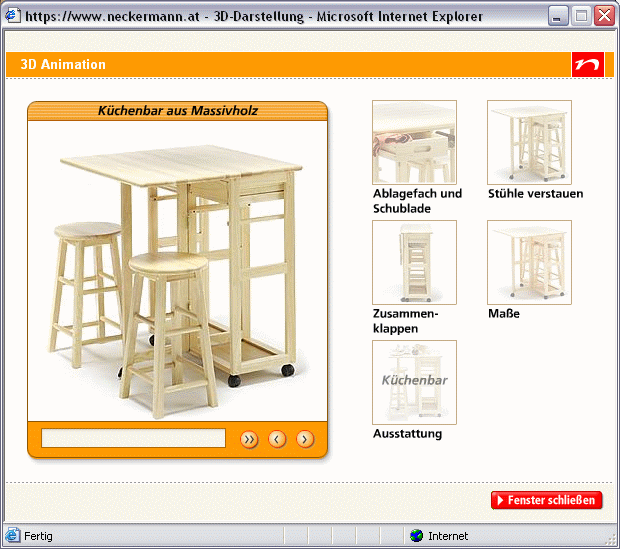

{kind=link}
{kind=link}
{kind=link}

|
Bernd Hollerit
Ferdinand Knapitsch
Jörg Meyer
Stefan Mooslechner
Es wird nun im Folgenden kurz erklärend auf die Art und Weise dieser ‹berprüfung eingegangen und eine kurze Zusammenfasssung der wesentlichsten Punkte gestellt.
Die Basis für eine sogenannte heuristischen Evaluierung dient ein kleines Team von Experten, die das zu testende Usability-Design (in diesem Fall die Website) systematisch anhand einer Liste von allgemein anerkannten Usability-Prinzipien, so genannter Heurismen, testen.
Jeder Tester arbeitete für sich allein in einem Zeitraum von etwa 2-3 Stunden. Es wurde zunächst der generelle Eindruck überprüft und in einer zweiten ‹berprüfung auf die Details eingegengen. Jeder Tester führt während des Tests ein Logfile, in dem sowohl positive als auch negative Eindrücke festgehalten werden. Von jedem der von ihm angeführten Punkte werden Screenshots angefertigt, die uns in weiterer Folge der Ausarbeitung und Präsentation der Testergebnisse dazu dienen werden, relevante Details möglichst anschaulich darzustellen.
Die von ihnen in Auftrag gegebene Evaluierung der Website neckermann.at wurde von den vier oben genannten Experten durchgeführt. Jeder der Experten benutzte dabei einen der allgemein üblichen Webbrowser, wobei der am weitesten verbreitete Internet Explorer von zwei Testern eingesetzt wurde.
Nach der Durchführung der Einzeltest und der Erstellung der Logfiles traf sich das Team zur Diskussion der Ergebnisse und der Erstellung eines Protokolls, sowie einer Präsentation.
Es wurden beim Testen ihrer Website sowohl positive als auch negative Punkte festgestellt, wobei hierbei gleich auf die detaillierte Aufstellung weiter unten in diesem Bericht hingewiesen werden soll. Positiv aufgefallen ist demnach das stets vorhandene Hilfesystem, das auch dem unerfahrenen User erlaubt sich auf der Seite zurechtzufinden. Ebenfalls positiv bewertet wurde die gute Einzelansicht der einzelnen Produkte und die hohe Qualität der gezeigten Abbildungen.
Es fällt im Allgemeinen der offene Zugang zu alternativen und modernen Präsentationsmethoden auf, wie zum Beispiel der 3d-Shop und der Kombi-Shop.
Leider führt uns das schon zu den auffallendsten Negativpunkten, die von allen Testern als gravierend beanstandet wurden. Es scheint die Anbindung dieser Präsentationsmethoden, insbesondere des Kombi-Shops an den relevantesten und heikelsten Teile der Website, den Warenh korb und den folgenden Bestellvorgang, zu massiven technischen Problemen zu führen. So kommt es zu nicht nachvollziehbaren und keinesfalls gewollten Einträgen in den Warenkorb. In Zuge dessen erscheinen auch teilweise verwirrende Fehlermeldungen und Aufforderungen zur Neueingabe, deren Befolgung zu tatsächlichen Fehlbestellungen führen kann! Es muss festgehalten werden, das diese heiklen Punkte zumindest einer dringenden technischen ‹berholung bedürfen.
Andere Fehler, wie gewisse unklare Formulierungen und Designschwächen sollten sich leichter beheben lassen.
Der naheliegende Vergleich mit relevanten Konkurenzwebseiten muss trotz einiger überaus positiver Ansätze im Allgemeinen leider negativ ausfallen.
Hardware und Software Konfigurationen, die die Evaluatoren benutzt haben.
| Evaluator | Bernd Hollerit | Ferdinand Knapitsch | Jörg Meyer | Stefan Mooslechner |
|---|---|---|---|---|
| Alter | 20 | 26 | 30 | 30 |
| Geschlecht | männlich | männlich | männlich | männlich |
| Webbrowser | IE 6.0 | Opera 7.52 | Firefox 1.0 | IE 6.0 |
| Betriebssystem | Windows XP Prof. | Windows XP Prof. | Windows XP Prof. | Windows XP Prof. |
| Verbindung | 768k | Cable | Cable | 512k |
| Monitor Farben | 32 Bit | 32 Bit | 32 Bit | 32 Bit |
| Monitor Auflösung | 1440x900 | 1280x1024 | 1280x1024 | 1280x960 |
| Monitor Größe | 17" | 19" | 19" | 21" |
| Datum der Eval. | 05.04.2005 | 05.04.2005 | 08.04.2005 | 08.04.2005 |
| Uhrzeit der Eval. | 20:58-22:54 | 13:20-16:00 | 10:00-11:20 | 10:23-12:53 |
Äußerst positiv fällt gleich einmal der 3D Shop auf, in dem man ausgesuchte Waren aus verschiedenen Blickwinkeln betrachten kann, zum Beispiel diese Küchenbar aus Massivholz:
|  |
Auch, wenn es einmal kein 3D-Modell gibt, zeigt sich Neckermann sehr detailverliebt und lässt den Benutzer die Produkte in der Detailansicht genauer unter die Lupe nehmen. Hier die Detailansicht des MTB "Explorer":
Entscheidet man sich schlussendlich für ein Produkt, wird sofort dessen Verfügbarkeit geprüft. Somit wird ausgeschlossen, dass man Bestellungen absendet, denen Neckermann nicht gerecht werden kann. Außerdem wird ein Ersatzartikel angeboten.
Weiters sei dei Suchfunktion positiv erwähnt, durch die man schnell und unkompliziert das gesamte Sortiment durchstöbern kann, sowie der Infopoint, in dem der Laien technische Informationen nachschlagen, im Möbellexikon schmökern oder professionelle Farb-, Stil- bzw. Typberatung genießen kann.
Es gibt auf dieser Seite drei wesentliche Hauptprobleme.
Zum ersten ist die Gestaltung nicht einheitlich. Die internen Links werden entweder im Hauptfenster geöffnet, oder es werden Pop-Up-Fenster eingesetzt.
Dies führt zum Beispiel bei einer hohen Sicherheitseinstellung bzw. beim
Einsatz eines Pop-Up-Blockers immer wieder zu Warnungen und Problemen.
So funktioniert in diesem Falle die Weiterleitung vom Warenkorb zur Kassa
nicht.
Es kommt auch vor, dass wie in den Abbildungen 4.1.1 und 4.1.2 zu sehen,
eine Fehlermeldung durch das Pop-Up-Fenster verdeckt wird. Es wäre sehr
vorteilhaft hier eine einheitliche Lösung zu finden.
|
|
Das zweite Problem stellt sich folgendermaflen dar:
Bei jedem Produkt das in den Warenkorb gelegt wird, wird automatisch
die Verfügbarkeit und die voraussichtliche Lieferzeit angezeit. Sollte
ein Produkt ausverkauft sein, wird ein Alternativprodukt vorgeschlagen.
Diese durchaus positive Funktion hat allerdings den Mangel, dass wenn man
sich für das Alternativprodukt entscheidet, anschlieflend beide Produkte
im Warenkorb zu finden sind. (Abbildung 4.2.1 und 4.2.2)

|
Das dritte und schwerwiegendste Problem stellt der KombiShop dar.
Die Idee, die hinter dem KombiShop steckt ist durchaus als sehr positiv und
ausbaufähig zu bewerten.
Die technische Umsetzung ist allerdings als geradezu katastrophal
zu bezeichnen.
Aber mal der Reihe nach:
Der "anprobieren-Link" unter den Produktfotos ist sehr klein gestaltet (Abbildung 4.3.1).
Man wird hier dazu verleitet auf das Produktfoto zu klicken. Dies führ
dazu, dass man zur Produktionformation kommt. Wenn man dann auf
den "Zurück-Button" klickt, sind allerdings lauter "neue", sprich andere
Produkte auf dieser Seite vorhanden. Auch wenn man auf den grafischen
"Nicky- bzw. Nick-Button" in der Produktinformation drückt, kommt zwar
ein Pop-Up das einem zum Kombi-Shop weiterleitet, allerdings wird der
Artikel dort anschlieflend nicht angezeigt.
Wenn man eine "Kombination" in den Warenkorb legen will, blockt der Explorer ein Pop-Up. (siehe Kritikpunkt 4.1)
Wenn man dieses Pop-Up zulässt, und man den Link "zur Kasse gehen" wählt, dann erscheint der Warenkorb. Die bisher im Warenkorb befindlichen Waren sind zwar in der Tabelle vorhanden, aber es ist nicht ersichtlich um welche Waren bzw. worum es sich überhaupt handelt, da keine Produktinformationen angezeigt werden. Weiters wird die Stückzahl der "alten" Produkte in Dezimalzahlen(?!?) dargestellt. (Abbildung 4.3.2)
Weiters erscheint bei den Produckten aus der "Kombination" der Text "Bitte genben Sie hier noch Gröfle und Farbe ein. Klicken Sie bitte auf "ändern"". (Abbildung 4.3.3)
Wenn man nun bei einem Produkt die Gröfle und die Farbe eingegeben hat, erscheint dieses Produkt zweimal im Warenkorb (einmal mit der Lieferauskunft und einemal mit der Bemerkung "keine Lieferauskunft möglich"). (Abbildung 4.3.4)
Alle anderen Artikel aus der Kombination werden mit dem Vermerk "Lieferauskunft nicht möglich" angezeigt. Es gibt aber keinen Hinweis darauf, dass die Gröfle und die Farbe noch gewählt werden mufl. Dafür werde die schon vorher im Warenkorb befindlichen Waren korrekt angezeigt. (Abbildung 4.3.5)
Der Kombi-Shop bietet eine sehr gute und sehr innovative Möglichkeit des Einkaufens an. Diese kann allerdings nur dann genutzt werden, wenn die Technik die im Hintergrund abläuft auch reibungslos funktioniert.
Gesamtliste aller gefundenen Probleme, in absteigender Reihenfolge ihrer durchschnittlicher Severity.
| # | Beschreibung | Begründ. | Heuristik | Gefunden | Severity | Ort (wie rekonstruierbar?) | |||||||
|---|---|---|---|---|---|---|---|---|---|---|---|---|---|
| H | C | T | S | H | C | T | S | Av | |||||
| 1 | wenn man ein geblocktes pop-up im kombishop nach der auswahl von "in den warenkorb legen" zulässt und den link "zur kasse gehen" wählt, dann erscheint der warenkorb. die bisher im warenkorb befindlichen waren sind zwar in der tabelle vorhanden (stückzahl 1.0), aber es ist nicht ersichtlich um welche waren bzw. worum es sich überhaupt handelt, da keine artikelinformationen angezeigt werden. weiters erscheint bei den artikeln aus der "kombination" der text "bitte genben sie hier noch gröfle und farbe ein. klicken sie bitte auf "ändern". | - | technical problem | x | x | 4 | 4 | 4 | 4 | 4,00 | startseite -> kombishop | ||
| 2 | viele pop-ups | - | minimalist design | x | x | x | 4 | 4 | 4 | 4 | 4,00 | generell | |
| 3 | die verfügbarkeit und die vorraussichtliche lieferzeit wird geprüft. wenn der artikel nicht mehr lieferbar ist, wird ein alternativprodukt vorgeschlagen. wenn man sich für dieses alternativprodukt entscheidet, bleibt allerdings das (nicht lieferbare) originalprodukt ebenfalls im warenkorb. | - | technical problem | x | x | 3 | 4 | 4 | 4 | 3,75 | beim legen eines produktes in den warenkorb | ||
| 4 | wenn man nun bei einem artikel die gröfle und die farbe eingegeben hat, erscheint dieser artikel zweimal im warenkorb (einmal mit der lieferauskunft und einemal mit der bemerkung <"keine lieferauskunft möglich">). alle anderen artikel aus der kombination werden mit dem vermerk <"lieferauskunft nicht möglich"> angezeigt. es gibt aber keinen hinweis darauf, dass die gröfle und die farbe noch gewählt werden mufl. dafür werden die schon vorher im warenkorb befindlichen waren korrekt angezeigt. | - | technical problem | x | x | 3 | 4 | 4 | 4 | 3,75 | startseite -> kombishop | ||
| 5 | wenn man eine "kombination" in den warenkorb legen will, blockt der explorer ein pop-up. | - | technical problem | x | x | 3 | 4 | 4 | 3 | 3,50 | startseite -> kombishop | ||
| 6 | wird anschlieflend der "zurück-button" gedrückt kommt man nicht auf die ausgangsseite zurück. drückt man hier nochmals den "zurück-button" kommt die meldung "diese seite kann nicht angezeigt werden". | - | reversible actions | x | x | 4 | 3 | 3 | 3 | 3,25 | sind sie neu bei neckermann? alle ... -> modeberater für ihn -> der kurze weg zu aktuellen produktempfehlungen | ||
| 7 | wenn hier kein anlafl angegeben wird, erscheint die fehlermeldung: "keine passenden produkte ... zu ihrem anlafl gefunden". diese meldung ist in dem zusammenhang falsch. | - | good error messages | x | x | 3 | 3 | 3 | 3 | 3,00 | sind sie neu bei neckermann? alle ... -> modeberater für ihn -> der kurze weg zu aktuellen produktempfehlungen | ||
| 8 | beim klick auf den link "zum neckermann dvd-shop" ergibt sich auf den ersten blick keine änderung. (das dvd-info-fenster bleibt offen.) erst wenn man das fenster manuell schlieflt, sieht man die fehlermeldung im hauptfenster "leider konnten keine passenden inhalte gefunden werden". | - | good error messages | x | x | 3 | 3 | 3 | 3 | 3,00 | sind sie neu bei neckermann? alle ... -> dvd-berater | ||
| 10 | weniger produkte auf dieser seite anzeigen wirkt wie ein link auf eine seite mit weiteren produkten. | - | speak the users' language | x | x | 3 | 3 | 3 | 3 | 3,00 | generell bei produktübersichtsseiten | ||
| 11 | bin ich in einer unterseite (z.b. klick auf ein angebot auf der hauptseite) kommt unter dem hauptmenü die zusätzliche navigationsleiste die auch einen "zurück" button enthält. dieser link verweist aber auf die übergeordnete kategorie und nicht wie der name des links sagt "zurück". | - | consistency | x | 3 | 3 | 3 | 3 | 3,00 | generell | |||
| 12 | service links wie job & karriere, bestellvorgang, kontakt, hilfe & support sowie die links unter der rubrik "service" auf der rechten seite öffnen nicht einheitlich entweder als pop-up oder eben im hauptframe. ich finde diese pop-ups sollten sich einheitlich im hauptframe öffnen und mit einem "zurück" link versehen werden. | - | aestethic design | x | x | x | 3 | 3 | 3 | 3 | 3,00 | generell | |
| 13 | preise sind teilweise als "punkte" angegeben. was sind punkte? kein link auf "neckpot". | - | help and documentation | x | 3 | 2 | 4 | 3 | 3,00 | bei manchen produkten: beispiel -> " elektronisches dartboard" 15010,00 punkte | |||
| 14 | anprobieren ist nur in der jeweiligen übersicht von shops&specials anwählbar, in der detailansicht ist der link als symbol getarnt, der zu einem für den inhalt zu kleinen, nicht skalierbaren popup führt. | - | consistency | x | 3 | 3 | 3 | 3 | 3,00 | startseite -> kombishop | |||
| 15 | es ist nicht notwendig das geburtsdatum anzugeben. hat der kunde aber sein passwort vergessen, mufl er den benutzernamen und das geburtsdatum angeben, um das passwort anfordern zu können. wenn er kein geburtsdatum angibt, kann der vorgang nicht durchgeführt werden. | - | error prevention | x | 2 | 3 | 3 | 3 | 2,75 | startseite -> mein neckermann -> anmelden | |||
| 16 | bei klick wird die seite bestellvorgang in einem neuen fenster geöffnet. ganz unten gibt es einen weiterführenden link mit informationen zu den einzelnen punkten. diese seite wird dann wieder in der hauptseite geöffnet. verwirrung vorprogrammiert! | - | aestethic design | x | 3 | 3 | 3 | 2 | 2,75 | bestellvorgang bzw. service links | |||
| 17 | die auswahl ist hier sehr klein, es wirkt hier etwas peinlich für zwei kinderfilm-dvds in eine eigene "kategorie" zu weiterzuleiten. | - | match between user and the real world | x | 2 | 2 | 4 | 3 | 2,75 | startseite -> technikwelt & computer -> dvd & video -> dvd filme | |||
| 18 | die schwarze schrift auf dem dunkelrotem hintergrund auf der seite neckpot ist sehr schwer lesbar. | - | aestethic design | x | 3 | 3 | 3 | 1 | 2,50 | startseite -> neckpot | |||
| 19 | der "anprobieren-link" unter den produktfotos ist sehr klein gestaltet. man wird hier dazu verleitet auf das produktfoto zu klicken. dies führt allerding dazu, dass man zur produktionformation kommt. wenn man dann auf den "zurück-button" klickt, sind allerdings lauter "neue" produkte auf dieser seite vorhanden. auch wenn man auf die grafischen "nicky- bzw. nick-button" drückt, kommt zwar ein pop-up das einem zum kombi-shop weiterleitet, allerdings wird der artikel dort anschlieflend nicht angezeigt. | - | aestethic design | x | 2 | 3 | 3 | 2 | 2,50 | startseite -> kombishop | |||
| 20 | man kann nicht mit ähnlichen produkten vergleichen, z.b. gibt es von einem dvd-recorder keinen link auf die dvd-recorder übersicht. | - | help and documentation | x | 3 | 2 | 3 | 2 | 2,50 | generell | |||
| 21 | startseite ist unübersichtlich gestaltet: sehr viel information auf kleinem raum - für einen laien sind dadurch viele informationen schwer zu finden. natürlich will neckermann.at sehr viele produkte gleich zu beginn zeigen! | - | aestethic and minimalistic design | x | x | 1 | 3 | 3 | 3 | 2,50 | startseite | ||
| 22 | sehr grofler ungenützer bereich für widescreens, viel information erst durch vertikales scrollen ersichtlich. | - | aestethic design | x | x | x | 3 | 2 | 2 | 2 | 2,25 | generell | |
| 23 | der warenkorb rechts oben auf der seite enthält je nach status 2 verschiedene informationen: "keine artikel" und "artikel enthalten". es sollten aussagekräftigere phrasen verwendet werden. z.b.: warenkorb leer bzw. "anzahl" artikel im warenkorb. | - | speak the users' language | x | 3 | 2 | 2 | 2 | 2,25 | generell | |||
| 24 | es ist keine zahlung mit kreditkarte möglich, dazu ist auch keine weitere erklärung vorhanden. | - | help and documentation | x | 2 | 2 | 3 | 2 | 2,25 | generell | |||
| 25 | seite "adresse" in bezug auf alternative anmeldungsmethoden über kundennummer/benutzername oder adresse unübersichtlich strukturiert. unterschied von "meinneckermann nutzer" und "besitzer einer neckermann-kundennummer" ist nicht klar | - | aestethic and minimalistic design | x | 3 | 2 | 3 | 1 | 2,25 | warenkorb -> adresse | |||
| 26 | auch wenn alle proportionen auf "normal" gesetzt werden, gibt es nur für 2 von 10 möglichen anlässen bekleidungsvorschläge. (disco und outdoor) | - | good error messages | x | 2 | 1 | 3 | 2 | 2,00 | sind sie neu bei neckermann? alle ... -> modeberater für ihn -> der kurze weg zu aktuellen produktempfehlungen | |||
| 27 | das fenster das hier neu geöffnet wird ist zu klein. der inhalt wird unten abgeschnitten, und eine vertikale bildlaufleiste ist vorhanden obwohl dies nicht notwendig wäre, wenn das fenster etwas höher wäre. | - | aestethic design | x | 2 | 1 | 2 | 3 | 2,00 | sind sie neu bei neckermann? alle ... -> gröflenberater | |||
| 28 | obwohl alle daten korrekt eingegeben wurden, erscheint im unteren bereich des fensters die meldung "leider konnten nicht alle gröflen ermittelt werden". es gibt aber keine information darüber welche daten nicht ermittelt werden konnten bzw. warum diese nicht ermittelt werden konnten. | - | good error messages | x | 2 | 2 | 2 | 2 | 2,00 | sind sie neu bei neckermann? alle ... -> gröflenberater | |||
| 29 | die detailansicht der beiden oberen möbel führt zu einer fehlermeldung im hauptfenster. diese ist wiederum aber erst lesbar, nachdem das ausgangsfenster manuell geschlossen wurde. | - | reversible actions | x | 3 | 1 | 2 | 2 | 2,00 | startseite -> infopoint -> möbelbezugsstoffe -> echtes leder | |||
| 31 | link "sind sie neu bei neckermann - informationen rund ums einkaufen" ist schwierig zu lesen. | - | aestethic design | x | x | x | 1 | 2 | 2 | 2 | 1,75 | startseite | |
| 32 | wenn der kunde angemeldet ist und seine persönlichen gröflen im gröflenberater anpassen möchte, sieht er ein formular mit vorausgefüllten komboboxen. die schriftgröfle ist dabei sehr klein, sodafl kunden mit schlechter sehkraft nur schwierig lesen können, was da steht. | - | aestethic design | x | 1 | 2 | 2 | 2 | 1,75 | startseite -> mein neckermann -> persönliche gröflen | |||
| 33 | popups sind teilweise in der grösse nicht veränderbar. | - | aestethic design | x | 1 | 2 | 3 | 1 | 1,75 | generell | |||
| 34 | die ordnungszahlen bei den links am oberen rand sind unvollständig, wobei 4. auch in der seite nicht vorkommt. | - | consistency | x | x | 2 | 1 | 2 | 1 | 1,50 | sind sie neu bei neckermann? | ||
| 35 | die information wie man neckpot-punkte sammelt steht erst am ende der seite. | - | bad documentation | x | 1 | 2 | 2 | 1 | 1,50 | startseite -> neckpot | |||
| 37 | keine information, wie viel oder ob die kataloge überhaupt etwas kosten | - | documentation | x | 2 | 1 | 2 | 1 | 1,50 | startseite -> katalog anfordern | |||
| 38 | bei auswahl von "anprobieren" manchmal (nicht nachvollziehbar) folgende warnung im popup: warning: implode(): bad arguments. in /export/home/www/www.neckermann.at/htdocs/virtmod/virtmod.lib on line 101 (firefox) | - | technical problem | x | 1 | 2 | 2 | 1 | 1,50 | startseite -> kombishop | |||
| 39 | design und stil der flash-animation weichen sehr stark vom allgemeinen design der neckermann-page ab. | - | consistency | x | 1 | 0 | 2 | 2 | 1,25 | sind sie neu bei neckermann? alle ... -> dvd-berater | |||
| 41 | zu hohes banner "willkommen in babys welt, wodurch vertikales scrollen nötig wird. | - | aestethic design | x | 2 | 0 | 1 | 1 | 1,00 | startseite | |||
| 43 | frames werden verwendet - keine schöne lösung. besser ohne frames, da durch eine direkte verlinkung in "unter-"seiten die navigations- bzw. menüleiste verloren geht. | - | aestethic design | x | 0 | 2 | 1 | 1 | 1,00 | generell | |||
| 44 | die komplette seite wird immer neu geladen wenn die kategorie gewechselt wird, obwohl der obere bereich im groflen und ganzen immer gleich bleibt | - | minimalist design | x | 2 | 0 | 1 | 0 | 0,75 | generell | |||
| 45 | hinweis auf "stiftung warentest", allerdings kein link | - | help and documentation | x | 1 | 0 | 1 | 0 | 0,50 | startseite -> technikwelt & computer -> dvd & video -> palladium "dw 8020" | |||
| 46 | bei der registrierung mufl die e-mail adresse angegeben werden und trotzdem bekommt der kunde keine bestätigungs e-mail mit den angegebenen benutzerdaten vom system. | - | speak the users' language | x | 0 | 1 | 1 | 0 | 0,50 | startseite -> mein neckermann -> anmelden | |||
|
|
Rohe, individuelle Problemlisten der einzelnen Evaluatoren. (im Hardcopy Listen auch ausgedruckt beilegen).
| Name | Logdatei |
|---|---|
| Bernd Hollerit | log-bernd_h.txt |
| Ferdinand Knapitsch | log-fekn.txt |
| Jörg Meyer | log-jmeyer.txt |
| Stefan Mooslechner | log-moosi75.txt |
{kind=link}
{kind=link}
{kind=link}
{kind=link}
{kind=link}